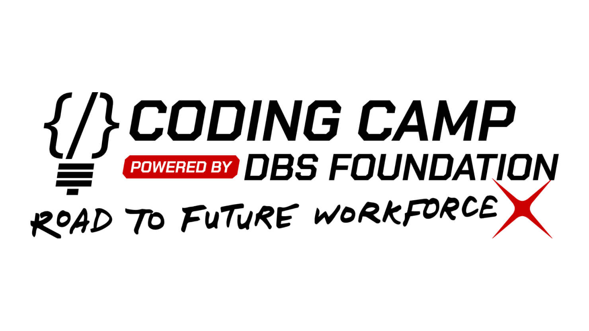

Projects


Capstone · DBS Foundation
Prediksi Stunting
Neural network untuk klasifikasi risiko stunting anak. Capstone project Coding Camp powered by DBS Foundation.
TensorFlow
Python

IoT · Real-time
MQTT Inference System
Backend Go yang stream data sensor via MQTT, proses pakai model Python, dan serve ke client lewat WebSockets.
Go
Python
MQTT

Sistem Informasi Kependudukan
Platform manajemen data penduduk tingkat RT/RW. Dashboard untuk data warga, kesehatan, pendidikan.

Website Polytechnic Computer Club
Website profil organisasi UKM Polytechnic Computer Club Polines. Menampilkan kepengurusan, event, galeri, dan blog.
Odoo ERP
Odoo Custom Modules
Modifikasi dan pengembangan modul ERP Odoo untuk kebutuhan organisasi kampus.

Coding Camp — DBS Foundation
Capstone ML project dari program Coding Camp. Fokus di data preprocessing dan model training.
SiPenduduk — API Docs
Dokumentasi REST API untuk Sistem Informasi Kependudukan.